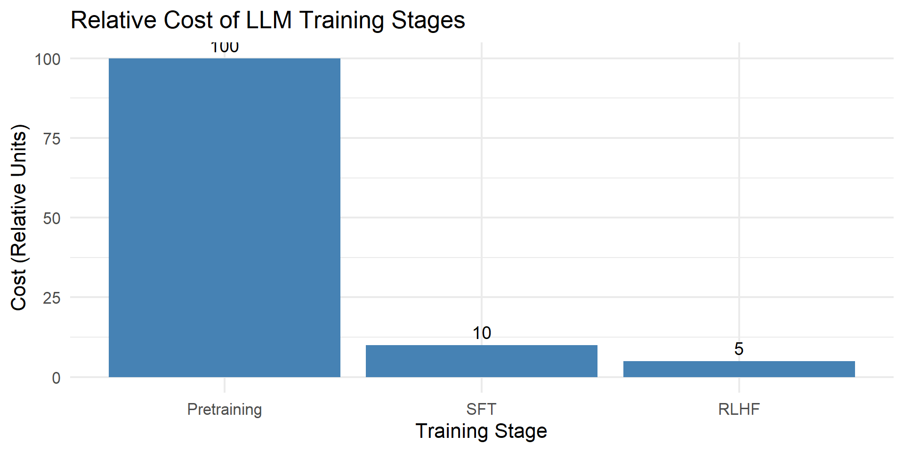

Base Model → SFT → RLHF
Modern LLMs (GPT-4, Claude, Gemini, Llama-3, Grok) follow a three-stage training pipeline:
We’ll learn each step with simple, intuitive explanations.
A base model that knows a lot, but does not know how to follow instructions.
User: “How do I cook pasta?”
Base Model:
“Pasta is a food originating in Italy. Many countries consume pasta…”
The base model tends to ramble, because it has never been trained to behave like an assistant.
Teach the model to follow instructions by showing it example conversations:
User: Explain photosynthesis simply.
Assistant: Photosynthesis is how plants make food using light…
The model imitates this pattern.
But SFT alone does not guarantee alignment, safety, or preference-following.
User: “How do I cook pasta?”
SFT Model:
“Boil water, add salt, place the pasta in the pot, cook until tender, then drain. Finish it with sauce or seasoning.”
After SFT, the model becomes much more direct, clear, and helpful.
After only SFT, models may still: - be unsafe - hallucinate confidently - produce biased/harmful content - ignore human preferences (too long, too short, etc.)
This motivates Stage 3.
Make the model helpful, harmless, honest, aligned, and user-preferred.
Humans compare two answers:
Answer A: clear, safe, helpful
Answer B: confusing, incomplete
Humans pick A → The LLM learns to produce more A-like answers.
After RLHF, the model becomes: - safer - more detailed when needed - aware of user intent - more conversational and supportive
User: “How do I cook pasta?”
RLHF Model:
“To cook pasta safely and correctly, start by boiling a large pot of water. Add a tablespoon of salt, then place the pasta in the water. Stir occasionally to prevent sticking. Cook according to the package instructions, usually 8–12 minutes, until al dente. Drain carefully to avoid burns, then add sauce or seasoning. Let me know if you want a specific recipe!”
The final aligned model becomes: - more polite - more helpful - safer - better at refusing harmful requests - less hallucination-prone - more consistent with human expectations
This produces ChatGPT-like behavior.
Base Model (Pretraining)
↓
SFT (Instruction Tuning)
↓
RLHF (Preference Optimization)
Each stage builds on the previous.
Because each stage has a different purpose:
Together, they create a strong, aligned assistant.
But all still come after SFT.
This pipeline is why today’s LLMs feel helpful, safe, and aligned.
Large Language Models require different types of datasets at each training stage.
Each stage has different goals, data formats, examples, and behaviors produced.
Teach the model language, reasoning, and world knowledge.
PRETRAINING (BASE MODEL)
┌─────────────────────────────────────┐
│ Massive Raw Text Corpus │
│ • Books 📚 │
│ • Wikipedia 🌍 │
│ • News 📰 │
│ • Web Pages 🌐 │
│ • GitHub Code 💻 │
└─────────────────────────────────────┘
↓ next-token prediction
Model learns: grammar, facts,
reasoning, long-term patternsThe process of photosynthesis allows plants to convert sunlight into energy...Teach the model to follow instructions and respond like an assistant.
SUPERVISED FINE-TUNING (SFT)
┌────────────────────────────────────────┐
│ Instruction → Response Pairs │
│ User: "Explain gravity." │
│ Assistant: "Gravity is a force..." │
│ │
│ Teaches structure, clarity, tone │
└────────────────────────────────────────┘
↓ imitation learning
Model becomes helpful & directUser: Summarize this article.
Assistant: Here is a concise summary...
User: Solve 3x + 5 = 20.
Assistant: x = 5.
User: Write a polite email.
Assistant: Hi Professor, I hope you're doing well...Teach the model which responses humans prefer, focusing on safety and clarity.
RLHF (PREFERENCE LEARNING)
┌─────────────────────────────────────────────┐
│ Human Ranking Data │
│ Prompt: "Explain gravity to a child." │
│ │
│ Response A: Simple, clear 🌟 (preferred) │
│ Response B: Too complex 📉 │
│ │
│ Reward Model learns: A > B │
└─────────────────────────────────────────────┘
↓ PPO / DPO reinforcement
Model becomes aligned and safePrompt: How do I fix a gas leak?
Response A: Contact a licensed technician immediately.
Response B: Try tightening the pipe.
Human Preference: A > B (safety)| Stage | Goal | Data Format | Examples | Produces |
|---|---|---|---|---|
| Pretraining | Learn language + knowledge | Raw text | Wikipedia, books, web pages, code | Base model |
| SFT | Learn to follow instructions | User → Assistant | Summaries, math problems, emails | Helpful assistant |
| RLHF | Learn human preferences | Prompt + ranked answers | Safety choices, clarity preference | Safe, aligned model |
TRAINING PIPELINE
┌──────────────────────┐
│ Stage 1 │
│ Pretraining │
│ Raw Text 📚 │
└──────────┬───────────┘
↓
┌──────────────────────┐
│ Stage 2 │
│ SFT │
│ Instr-Resp 🤝 │
└──────────┬───────────┘
↓
┌──────────────────────┐
│ Stage 3 │
│ RLHF │
│ A/B Ranking 🌟 │
└──────────────────────┘
Result: Helpful, Safe, Aligned Assistant 🤖✨The three stages of LLM training differ greatly in computational cost.
Pretraining is by far the most expensive, followed by SFT and RLHF.

Together, these datasets create modern LLMs like ChatGPT, Claude, Gemini, and Llama.